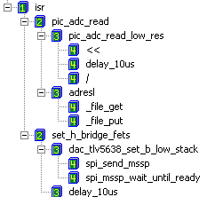
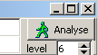
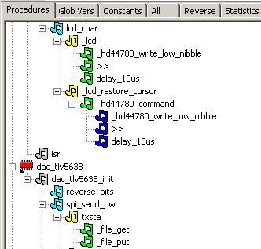
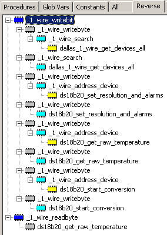
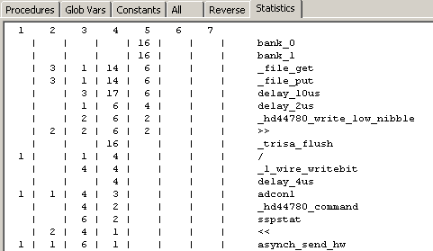

March 2005
Stack parsing
This utility analysis the stack usage of a program (at this moment only for JAL), by determining calling dependancies of procedures, functions and global vars. The utility is just a quick and dirty implementation, and is not 100% correct, but at least it can point you in some direction. This utility is not longer available as stand-alone program.
|
Important Example
On the right the dependancy tree of the interrupt service routine (ISR) is shown. This example clearly shows the enormous waste of stack levels. The ISR uses 4 levels of the stack. So for the rest of the program, only 4 stack-levels remain !!
Another important thing you can see here, is that you can check if the interrupt service routine uses interrupt unsafe procedures. In this case the procedures "<<" , "/" and "delay_10us" are not-interrupt-safe. Through the Right-Mouse menu / Reverse, you can check if the non-interrupt-safe routines are called in other program parts, to see if these non-interrupt-safe routines will really cause any trouble. |
 |
Not solved problems
173 = call
113 = include
22 = proc def
42 = func def
todo:
Procedure dependency
|
This view lists all the procedure dependencies. With the icons you can get a quick interpretation of the level.
 with the level spinbutton you can expand or collapse the nodes to a certain level. This works also in other treeviews.
By selecting a procedure, RM-menu, you can get a reverse analysis of that procedure.
todo: - better icons (with a small number in it?) - doubleclick is open editor at procedure definition or calling place ? |
 |
Reverse Procedure dependency
|
This list shows by what routines a selected function is called. You can add more than 1 routine to this list. Top level routines can be deleted from the list through the RM-menu.
todo: - open routine in editor on doubelclick - better icons |
 |
Stack statistics
|
This page shows the statistics of all the calls.
The top row indicates the available stacklevel, which here is only 7 (instead of 8), because an interrupt service routine is detected.
The called routines are ordered, in such a way that the deepest and most often called routine is at the top.
todo: - click on line, opens editor at the procedure definition ? - graphical representation ? |
 |
ALL treeview
|
This gives another treeview of the complete project. For each file it lists the following groups:
- Procedures Public (PP) - Procedures Private (PL) - Variables Public (V) - Constants Public (C) - Macro Definitions (MD)
Each group (of all files) can be expanded or collapsed by the buttons on the top.
todo: - icons - doublick --> open editor |
|
Global Variables
todo
Global Constants
todo